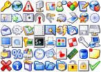
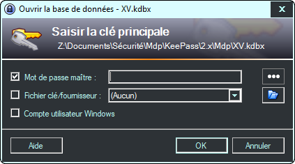

La FAQ technique
La FAQ techniqueLa Foire Aux Questions sur l'utilisation de KeePass. |
Configuration :
Installation/Intégration :
- Pourquoi KeePass 2.x ne s'exécute-t-il pas sur mon ordinateur ?
- Pourquoi KeePass 2.x tombe-t-il en panne lors de son démarrage à partir d'un lecteur/partage réseau ?
- Est-ce que KeePass 2.x utilise les implémentations d'algorithme validées FIPS ?
- Pourquoi le fichier d'aide CHM ne fonctionne-t-il pas ?
- Où puis-je trouver plus d'icônes d'application pour les raccourcis Windows ?
- Comment puis-je ajouter plus d'icônes client pour les entrées de mot de passe ?
- Est-ce que KeePass prend en charge un mode mini ?
- Pourquoi KeePass ne se verrouille-t-il pas après la saisie automatique ?
- Pourquoi la saisie automatique ne fonctionne-t-elle pas correctement sur les systèmes polonais ?
- Pourquoi KeePass essaie-t-il de se connecter à Internet ?
- Est-ce que l'interface graphique de l'utilisateur prend en charge les thèmes sombres ?
- Comment modifier la (taille) police de l'interface graphique de l'utilisateur ?
Sécurité :
- Est-ce que la saisie automatique est protégée contre les renifleurs de clavier ?
- Est-ce la saisie automatique peut localiser les commandes enfant ?
- Pourriez-vous ajouter l'algorithme de chiffrement ... à KeePass ?
- Pourquoi KeePass ne se verrouille-t-il pas lorsqu'une sous-boîte de dialogue est ouverte ?
- L'impression crée un fichier temporaire. Sera-t-il effacé en toute sécurité ?
- Pourquoi la qualité estimée d'un mot de passe chute-t-elle soudainement ?
Utilisation :
- Comment stocker et travailler avec de grandes quantités de texte (formaté) ?
- Un champ d'adresse de courriel peut-il être ajouté ?
 J'ai enregistré mes options, mais lorsque je rouvre KeePass, j'obtiens les anciennes options. Qu'est-ce qui ne va pas ?
J'ai enregistré mes options, mais lorsque je rouvre KeePass, j'obtiens les anciennes options. Qu'est-ce qui ne va pas ?
KeePass prend en charge deux emplacements différents pour stocker les informations de configuration : le fichier de configuration global dans le répertoire de KeePass et un fichier local, dépendant de l'utilisateur, dans le dossier de configuration privé de l'utilisateur. Vous n'avez probablement pas l'accès en écriture à votre fichier de configuration global.
Pour plus de détails, alors voir  La configuration.
La configuration.
Pourquoi KeePass 2.x ne s'exécute-t-il pas sur mon ordinateur ?
Les symptômes : lorsque vous essayez d'exécuter KeePass 2.x sous Windows ≤ XP, un message d'erreur comme le suivant s'affiche :
"Un fichier .DLL est requis, MSCOREE.DLL, est introuvable" ou
"L'application n'a pas réussi à s'initialiser correctement (0xc0000135)".
La cause : KeePass 2.x nécessite Le Framework .NET ≥ 2.0 de Microsoft.
La résolution : installer le Framework .NET 2.0 ou supérieur de Microsoft. Il est disponible en téléchargement gratuit sur le site Web de Microsoft : Microsoft .NET Framework. Alternativement, vous pouvez l'installer via Windows Update (le framework est un composant facultatif).
KeePass 1.x ne nécessite pas ce framework.
 Pourquoi KeePass 2.x tombe-t-il en panne lors de son démarrage à partir d'un lecteur/partage réseau ?
Pourquoi KeePass 2.x tombe-t-il en panne lors de son démarrage à partir d'un lecteur/partage réseau ?
Les symptômes : lorsque vous essayez d'exécuter KeePass 2.x à partir d'un lecteur/partage réseau, vous obtenez un message d'erreur comme celui-ci :
"L'application a généré une exception qui n'a pas pu être gérée" ou
"KeePass a rencontré un problème et doit fermer".
La cause : la stratégie de sécurité par défaut stricte du Framework .NET de Microsoft interdit l'exécution d'applications .NET à partir d'un lecteur/partage réseau.
La résolution recommandée : copier/installer KeePass 2.x sur un disque dur local et exécuter la copie.
La résolution alternative non recommandée : configurez la stratégie de sécurité pour autoriser l'exécution d'applications .NET à partir de lecteurs/partages réseau. Demandez à votre administrateur de le faire (des droits d'administrateur sont requis). Si vous disposez des droits administrateur et que vous souhaitez le faire vous-même, alors vous pouvez utiliser l'outil de stratégie de sécurité d'accès au code (Caspol.exe) fourni avec le framework .NET (des instructions utiles peuvent être trouvées ici et ici).
 Est-ce que KeePass 2.x utilise les implémentations d'algorithme validées FIPS ?
Est-ce que KeePass 2.x utilise les implémentations d'algorithme validées FIPS ?
KeePass utilises plusieurs algorithmes. Cette FAQ répond en se concentrant sur les algorithmes utilisés pour le chiffrement/déchiffrement d'un fichier de base de données. Typiquement, KeePass utilise principalement AES-256, SHA-256, HMAC-SHA-256 et SHA-512 ici (sauf si l'utilisateur a spécifié un autre algorithme de chiffrement ou une autre fonction de dérivation de clé dans les paramètres de la base de données). Pour ces algorithmes, le Framework .NET fournit les classes, et KeePass les utilises.
Depuis la version 4.8, le Framework .NET prend en charge les implémentations des algorithmes validés FIPS ci-dessus (see 'Qu'est-ce qu'il y a de nouveau dans le Framework .NET 4.8 ?').
Pour une compatibilité avec les versions anciennes du Framework .NET, KeePass ignore le mode FIPS par défaut. Si tous vos PC ont le Framework .NET 4.8 ou supérieur d'installé, alors vous pouvez activé l'utilisation des implémentations d'algorithme validés FIPS en ouvrant le fichier 'KeePass.exe.config' à l'aide d'un éditeur de texte et effacer la ligne '<enforceFIPSPolicy enabled="false" />'.
Les implémentations d'autres algorithmes (tels que ChaCha20 et Argon2) ne sont pas validées FIPS. Si Microsoft fournira des implémentations validées de ces algorithmes dans le futur, alors nous considérons que nous les utiliserons.
 Pourquoi le fichier d'aide CHM ne fonctionne-t-il pas ?
Pourquoi le fichier d'aide CHM ne fonctionne-t-il pas ?
Les symptômes : Lorsque vous essayez d'ouvrir le fichier d'aide de KeePass CHM à partir d'un ordinateur distant ou d'un lecteur réseau partagé, il ne s'affiche pas correctement (navigation interrompue, etc.).
La solution : Consulter le bulletin de sécurité Microsoft MS05-026.
 Où puis-je trouver plus d'icônes d'application pour les raccourcis Windows ?
Où puis-je trouver plus d'icônes d'application pour les raccourcis Windows ?
|
Les icônes d'application sont des icônes au format Windows ICO. Ils peuvent être utilisés dans les raccourcis Windows et/ou comme icônes d'association de fichiers. L'exécutable KeePass contient diverses icônes d'application qui peuvent être utilisées à ces fins. |
 Comment puis-je ajouter plus d'icônes clientes pour les entrées de mot de passe ?
Comment puis-je ajouter plus d'icônes clientes pour les entrées de mot de passe ?
|
Les icônes clientes sont les icônes utilisées pour les entrées de mot de passe et les groupes dans KeePass. Chaque entrée peut se voir attribuer sa propre icône. |
 |
 Est-ce que KeePass prend en charge un mode mini ?
Est-ce que KeePass prend en charge un mode mini ?
Les fonctions peuvent être bloquées/forcées en utilisant un fichier de configuration forcée.
 Pourquoi KeePass ne se verrouille-t-il pas après la saisie automatique ?
Pourquoi KeePass ne se verrouille-t-il pas après la saisie automatique ?
Cela ne s'applique pas à KeePass 2.x.
 Pourquoi la saisie automatique ne fonctionne-t-elle pas correctement sur les systèmes polonais ?
Pourquoi la saisie automatique ne fonctionne-t-elle pas correctement sur les systèmes polonais ?
Sur les systèmes polonais, la touche de raccourci global de saisie automatique par défaut Ctrl+Alt+A entre en conflit avec une commande système et est fréquemment utilisée lors de la saisie. Par conséquent, la saisie automatique est souvent exécutée accidentellement.
La touche de raccourci global de saisie automatique peut être remplacée par une combinaison de touches différente dans les options KeePass (voir la saisie automatique pour plus de détails).
 Pourquoi l'impression ne fonctionne pas dans KeePass 1.x ?
Pourquoi l'impression ne fonctionne pas dans KeePass 1.x ?
Les symptômes : lorsque vous essayez d'imprimer une liste de mots de passe dans KeePass 1.x, rien ne se passe après avoir cliqué sur OK dans la boîte de dialogue 'Options d'impression'.
La cause : KeePass 1.x utilise l'application associée aux fichiers .html pour imprimer la liste des mots de passe. Si cette application ne prend pas en charge le verbe shell "print" (comme Mozilla Firefox), alors rien ne se passe.
La résolution : Associez les fichiers .html à une autre application qui prend en charge le verbe shell "print" (telle qu'Internet Explorer).
La résolution alternative/la solution de contournement : cliquer sur "Fichier" → 'Aperçu avant impression' dans KeePass 1.x et imprimez manuellement le document dans l'application qui vient d'ouvrir le fichier.
 Pourquoi KeePass essaie-t-il de se connecter à Internet ?
Pourquoi KeePass essaie-t-il de se connecter à Internet ?
KeePass a une option pour vérifier automatiquement les mises à jour à chaque démarrage du programme. Afin de vérifier les mises à jour, KeePass télécharge un petit fichier d'informations sur la version et compare la version disponible avec la version installée. Aucune information personnelle n'est envoyée au serveur Web de KeePass.
Les vérifications automatiques des mises à jour sont effectuées de manière non intrusive en arrière-plan. Une notification s'affiche uniquement lorsqu'une mise à jour est disponible. Les mises à jour ne sont pas téléchargées ou installées automatiquement.
Quans on démarre KeePass pour la première fois, le logiciel demande si la vérification de la mise à jour automatique soit être activée (recommandée). Elle peuvt être activée/désactivée dans 'Outils' → 'Options...' → onglet 'Avancé'.
 Est-ce que l'interface graphique de l'utilisateur prend en charge les thèmes sombres ?
Est-ce que l'interface graphique de l'utilisateur prend en charge les thèmes sombres ?
Oui. KeePass prend en charge tous les thèmes du système, incluant ceux qui sont sombres.
- Sur Windows 11, un thème (sombre) peut être sélectionné dans les paramètres Windows → 'Accessibilité' → 'Thèmes de contraste'.
- Sur Windows 10, un thème (sombre) peut être sélectionné dans les paramètres Windows → 'Personnalisation' → 'Thèmes' → 'Paramètres de contraste élevé'.
- Sur Windows 7, 8 et 8.1, un thème (sombre) peut être sélectionné dans le panneau de configuration → 'Apparence et personnalisation' → 'Personnalisation'.
Exemple (Windows 11, thème 'Crépuscule') :

Option 'Choisir votre mode (application par défaut) ' → 'Sombre'.
Windows 11 possède une option 'Choisir votre mode' (sur Windows 10, c'est nommé 'Choisir votre mode d'application par défaut'), qui peut être positionnée à 'Sombre'. Remarquer que cette option s'applique seulement aux applications UWP, et non aux applications Windows régulières. Windows permet l'option UWP pour contredire le thème du système (c-à-d. un thème de système claire peut être actif même si l'option UWP est positionnée à 'Sombre'). KeePass est une application Windows régulière, et non pas une application UWP, donc il suit le thème du système, pas celui de l'option UWP. C'est le comportement attendu ; KeePass n'a rien à voir avec le les options UWP.
Apparence personnalisée.
Si vous souhaitez modifier l'apparence de KeePass indépendamment du thème du système actif, alors vous pourriez être intéressé par le greffon KeeTheme.
 Comment modifier la (taille) police de l'interface graphique de l'utilisateur ?
Comment modifier la (taille) police de l'interface graphique de l'utilisateur ?
KeePass utilise la police par défaut de l'interface graphique de l'utilisateur qui est spécifiée dans les paramètres du système d'exploitation. Par conséquent, si vous souhaitez modifier la police (notamment la taille de la police) que KeePass utilise, alors modifiez-la globalement.
- Sur Windows 11, la taille de la police peut être changée dans les paramètres Windows → 'Système' → 'Affichage' → 'Mise à l'échelle & disposition' → option 'Mise à l'échelle'. Redémarrer Windows après avoir modifié cette option.
 N'utilisez pas cette option 'Taille du texte' (dans les paramètres Windows → 'Accessibilité' → 'Vision'), parce que cette option ne met pas proprement tous les textes à l'échelle.
N'utilisez pas cette option 'Taille du texte' (dans les paramètres Windows → 'Accessibilité' → 'Vision'), parce que cette option ne met pas proprement tous les textes à l'échelle.
- Sur Windows 10, la taille de la police peut être modifiée dans les paramètres Windows → 'Système' → 'Écran' → 'Mise à l'échelle & disposition' → option 'Modifier la taille du texte, des applications et d'autres éléments'. Redémarrer Windows après avoir modifié cette option.
 N'utilisez pas l'option 'Agrandir le texte' (dans les paramètres Windows → 'Option d'ergonomie' → 'Écran'), parce que cette option ne met pas proprement tous les textes à l'échelle.
N'utilisez pas l'option 'Agrandir le texte' (dans les paramètres Windows → 'Option d'ergonomie' → 'Écran'), parce que cette option ne met pas proprement tous les textes à l'échelle.
- Sur Windows 7, 8 et 8.1, la taille de la police peut être modifiée dans le panneau de configuration Windows → 'Apparence et Personnalisation' → 'Affichage'.
- Sur les systèmes Linux avec KDE 5 ou supérieur, la police peut être modifiée dans les paramètres du système → 'Polices'.
- Sur les systèmes Linux avec GNOME 3 ou supérieur, la police peut être modifiée en utilisant GNOME Tweaks → 'Polices'.
En supplément pour le support de ces paramètres système, KeePass permet de personnaliser la taille qui est utilisée dans les listes et pour les mots de passe (dans la boîte de dialogue des options ; ces paramètres affectent seulement KeePass et aucune autre application).
La fonction de saisie automatique résiste-t-elle aux enregistreurs de frappes ?
Par défaut : non. La méthode de saisie automatique de KeePass 2.x fonctionne de la même manière que celle de 1.x et n'est donc pas sécurisée pour les enregistreurs de frappes.
Cependant, KeePass propose une méthode alternative appelée obfuscation de saisie automatique à deux canaux (TCATO), qui rend les enregistreurs de frappes inutiles. Il s'agit d'une fonctionnalité opt-in (car elle ne fonctionne pas avec toutes les fenêtres) et doit être activée manuellement pour les entrées. Consulter la documentation TCATO pour plus de détails.
 Est-ce la saisie automatique peut localiser les commandes enfant ?
Est-ce la saisie automatique peut localiser les commandes enfant ?
Non. La saisie automatique vérifie uniquement si le titre de la fenêtre de niveau supérieur actuellement active correspond.
Les navigateurs comme Mozilla Firefox dessinent complètement la fenêtre (tous les contrôles) eux-mêmes, sans utiliser les contrôles Windows standard. Par conséquent, il est techniquement impossible pour KeePass de vérifier si une URL correspond (des méthodes telles que la création d'une capture d'écran et l'utilisation de la reconnaissance optique des caractères ne sont pas fiables et sécurisées). De plus, il est impossible de vérifier quel contrôle enfant a actuellement le focus. Ces problèmes ne peuvent être évités qu'en utilisant des greffons d'intégration de navigateur, c'est-à-dire en n'utilisant pas du tout la saisie automatique.
L'utilisateur doit s'assurer que le focus est placé dans le bon contrôle avant de commencer la saisie automatique.
 Pourriez-vous ajouter l'algorithme de chiffrement ... à KeePass ?
Pourriez-vous ajouter l'algorithme de chiffrement ... à KeePass ?
AES (Rijndael) et ChaCha20 sont pris en charge. Il existe divers greffons qui prennent en charge des algorithmes de chiffrement supplémentaires, y compris, mais sans s'y limiter, Twofish, Serpent et GOST.
Si vous souhaitez implémenter un algorithme, jetez un œil à l'exemple de greffon ArcFourCipher.
 Pourquoi KeePass ne se verrouille-t-il pas lorsqu'une sous-boîte de dialogue est ouverte ?
Pourquoi KeePass ne se verrouille-t-il pas lorsqu'une sous-boîte de dialogue est ouverte ?
KeePass dispose de diverses options pour verrouiller automatiquement son espace de travail (après un certain temps d'inactivité, lorsque l'ordinateur se verrouille ou que l'utilisateur change d'utilisateur, lorsque l'ordinateur est suspendu, etc.). Cependant, l'espace de travail n'est pas automatiquement verrouillé lorsqu'une sous-boîte de dialogue (telle que la boîte de dialogue "Modifier l'entrée...") est ouverte.
Pour comprendre pourquoi ce comportement est logique, il est d'abord important de savoir ce qui se passe lorsque l'espace de travail est verrouillé. Lors du verrouillage, KeePass ferme complètement la base de données et ne mémorise que quelques paramètres d'affichage, comme le dernier groupe sélectionné, la première entrée visible, les entrées sélectionnées, etc. Du point de vue de la sécurité, cela permet d'obtenir la meilleure sécurité possible : briser un espace de travail verrouillé est équivalent à casser la base de données elle-même.
Revenons maintenant à la question initiale. Supposons qu'une sous-boîte de dialogue soit ouverte et que l'un des événements se produise et qui devrait verrouiller automatiquement l'espace de travail. Alors que doit faire KeePass maintenant ? Dans cette situation, KeePass ne peut pas demander à l'utilisateur quoi faire et doit prendre une décision automatique. Il existe plusieurs possibilités :
- Ne pas enregistrer la base de données et verrouiller.
Dans ce cas, toutes les données non enregistrées de la base de données seraient perdues. Cela s'applique non seulement aux données saisies dans la boîte de dialogue actuelle, mais à toutes les autres entrées et groupes qui ont été modifiés précédemment. - Enregistrer la base de données et verrouiller.
Dans ce cas, les modifications éventuellement indésirables sont enregistrées. Souvent, vous ouvrez des fichiers, essayez quelque chose, en gardant à l'esprit que vous pouvez simplement fermer le fichier sans enregistrer les modifications. KeePass a une option 'Enregistrer automatiquement quand on ferme/verrouille la base de données'. Si cette option est activée et qu'aucune sous-boîte de dialogue n'est ouverte, alors la marche à suivre est claire : essayez d'enregistrer la base de données et en cas de succès : verrouillez l'espace de travail. Mais que faire des modifications non enregistrées dans la sous-boîte de dialogue ? Doivent-elles être enregistrées automatiquement, supprimant la possibilité d'appuyer sur le bouton 'Annuler' ? - Enregistrer dans un fichier temporaire et verrouiller.
Cela semble être la meilleure alternative à première vue, mais cela pose également plusieurs problèmes. Tout d'abord, l'enregistrement dans un fichier temporaire peut échouer (par exemple : il peut y avoir trop peu d'espace disque libre ou un autre programme comme un antivirus peut le bloquer). Secundo, l'enregistrement dans un fichier temporaire n'est pas sans importance du point de vue de la sécurité. Lorsque vous devez choisir un emplacement, le répertoire temporaire de l'utilisateur sur le disque dur est généralement choisi (car il dispose probablement de suffisamment d'espace libre, des droits d'accès requis, etc.). Les bases de données KeePass pourraient y être divulguées et accumulées. Il n'est pas clair ce qui devrait se passer lorsque l'ordinateur est éteint ou tombe en panne alors qu'il est verrouillé. Lors de la prochaine ouverture de la base de données, doit-elle plutôt utiliser la base de données stockée dans le répertoire temporaire ? Que se passe-t-il si la 'vraie' base de données a été modifiée entre-temps (une situation assez réaliste si vous transportez votre base de données sur une clé USB) ?
Évidemment, aucune de ces alternatives n'est satisfaisante. Par conséquent, KeePass implémente le comportement simple et facile à comprendre suivant :
KeePass ne se verrouille pas lorsqu'une sous-boîte de dialogue est ouverte.
Ce concept simple évite les problèmes ci-dessus. L'utilisateur est responsable de l'état du programme.
Notez que l'ouverture d'une sous-boîte de dialogue n'est généralement requise que pour éditer quelque chose ; il n'est pas nécessaire pour utiliser les entrées, car la fenêtre principale propose différentes méthodes pour cela.
Le verrouillage lorsque Windows se verrouille. Sur Windows XP et versions antérieures, le service Windows 'Terminal Services' doit être activé. Si ce service est désactivé, alors le verrouillage de KeePass lorsque Windows se verrouille peut ne pas fonctionner. Ce service n'est pas requis sur les systèmes d'exploitation plus récents.
 L'impression crée un fichier temporaire. Sera-t-il effacé en toute sécurité ?
L'impression crée un fichier temporaire. Sera-t-il effacé en toute sécurité ?
KeePass crée un fichier HTML temporaire lors de l'impression des listes de mots de passe et de l'affichage des aperçus avant impression. Ce fichier est supprimé en toute sécurité lors de la fermeture de la base de données.
Vous devez attendre que le fichier soit complètement imprimé avant de fermer KeePass (et fermer l'aperçu avant impression avant de fermer KeePass), sinon il se peut que l'application d'impression empêche KeePass de supprimer le fichier.
Il n'existe aucun moyen de contourner le fichier temporaire dans le système d'impression actuel. Si vous souhaitez écrire un greffon qui envoie directement les données à l'imprimante, alors vous pouvez trouver un tutoriel de développement de greffon ici : Développement de greffon KeePass 2.x.
 Pourquoi la qualité estimée d'un mot de passe chute-t-elle soudainement ?
Pourquoi la qualité estimée d'un mot de passe chute-t-elle soudainement ?
Pour estimer la qualité/la force d'un mot de passe, KeePass utilise non seulement des méthodes statistiques (comme vérifier quelles plages de caractères sont utilisées, répéter les caractères et les différences), il a également une liste intégrée de mots de passe communs et vérifie les modèles. Lors de la saisie d'un mot de passe commun ou d'une répétition, la qualité estimée peut chuter.
Les détails peuvent être trouvés sur la page d'aide de l'estimation de la qualité des mots de passe.
 Comment stocker et travailler avec de grandes quantités de texte (formaté) ?
Comment stocker et travailler avec de grandes quantités de texte (formaté) ?
|
KeePass dispose d'un éditeur intégré qui permet de travailler facilement avec de grandes quantités de textes (formatés). |
{kind=link}
 Un champ d'adresse de courriel peut-il être ajouté ?
Un champ d'adresse de courriel peut-il être ajouté ?
Plusieurs fois, il a été demandé qu'un champ de saisie standard pour les adresses de courriel soit ajouté (sur l'onglet de la page principale dans la boîte de dialogue d'édition des entrées). La réponse courte : un champ d'adresse e-mail ne sera pas ajouté pour des raisons de convivialité. Maintenant la réponse longue.
Tout d'abord, supposons que la plupart des entrées stockées dans KeePass contiennent des informations permettant de se connecter à des sites Web. Lorsque vous enregistrez un compte pour un site Web, vous devez souvent spécifier un nom d'utilisateur ainsi qu'une adresse de courriel. Lorsque vous vous connectez régulièrement par la suite, il vous suffit généralement de fournir soit le nom d'utilisateur + le mot de passe associé, soit l'adresse de courriel + le mot de passe associé (mais jamais le nom d'utilisateur + adresse de courriel + le mot de passe associé). Ici, la première partie (qui est soit le nom d'utilisateur soit l'adresse de courriel) sert d'identification : vous dites au site Web qui vous êtes. La seconde partie (le mot de passe) assure l'authentification : vous prouvez au site que vous êtes bien celui que vous prétendez être.
Il existe différentes méthodes permettant à KeePass de transférer des données vers d'autres applications. Toutes ces méthodes supposent par défaut que le contenu du champ du nom d'utilisateur est utilisé pour l'identification. Par exemple, la séquence de saisie automatique par défaut d'une entrée est {USERNAME}{TAB}{PASSWORD}{ENTER}, la configuration par défaut de KeeForm utilise le nom d'utilisateur, etc. Maintenant, d'une part, certains sites Web nécessitent une adresse de courriel au lieu d'un nom d'utilisateur. D'autre part, nous voulons que la configuration de transfert de données par défaut fonctionne pour la plupart des sites Web (de sorte que le travail que l'utilisateur doit mettre dans la configuration soit minime et nécessaire uniquement pour les sites Web utilisant des formulaires de connexion spéciaux).
La solution est simple : au lieu d'interpréter le champ 'Nom d'utilisateur' strictement comme un champ contenant un nom d'utilisateur, les utilisateurs devraient plutôt l'interpréter comme un champ dans lequel sont stockées les données nécessaires à l'identification. Ces données peuvent consister en un nom d'utilisateur, une adresse de courriel ou autre chose (par exemple : un numéro de compte pour un site Web de banque en ligne). En le manipulant ainsi, la configuration de transfert de données par défaut fonctionnera pour la plupart des sites Web, c'est-à-dire qu'aucune quantité de travail ne doit être mise dans la configuration. Si vous deviez fournir à la fois un nom d'utilisateur et une adresse de courriel au moment de l'inscription, les autres informations (qui ne sont pas requises régulièrement) peuvent être stockées, par exemple dans le champ des remarques ou un champ personnalisé de chaîne de caractères de l'entrée KeePass.
Supposons maintenant qu'un champ d'adresse de courriel séparé soit ajouté. Lorsque les utilisateurs stockent à la fois un nom d'utilisateur et une adresse de courriel, KeePass ne peut pas savoir lequel des deux est requis pour l'identification. Ainsi, afin de configurer le transfert de données pour l'entrée, les utilisateurs seraient obligés de choisir lequel des deux champs doit être utilisé.
Ainsi, l'ajout d'un champ d'adresse de courriel serait un pas en arrière dans la convivialité, car cela oblige les utilisateurs à consacrer plus de temps à la configuration du transfert de données. Le système actuel ('Nom d'utilisateur' contenant des informations d'identification, sans champ d'adresse de courriel séparé) ne l'exige pas et constitue donc la meilleure solution.
Pour les utilisateurs qui souhaitent configurer manuellement le transfert de données pour chaque entrée, il existe plusieurs façons d'obtenir un champ d'adresse de courriel distinct. Après être passé à l'onglet 'Avancé' dans la boîte de dialogue d'édition d'entrée, un champ d'adresse de courriel peut être ajouté en tant que chaîne personnalisée de caractères. Si le champ doit apparaître sur la page de l'onglet principal de la boîte de dialogue, le greffon KPEntryTemplates peut être utilisé.